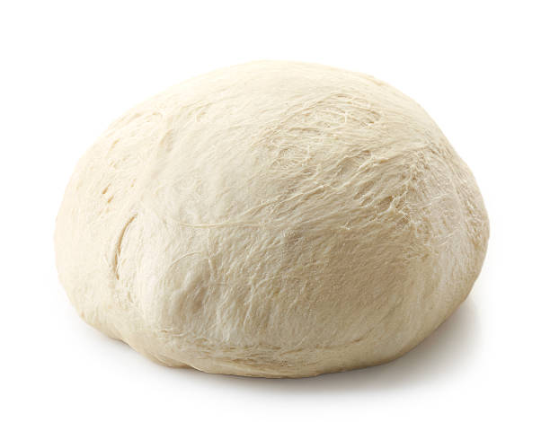

Home index page
Maddie's Pizza Dough

Description
Discovered on a tiktok, Maddie made this recipe her own. It makes quite a bit of dough and can be refrigerated or frozen for later. Makes great pizzas but also amazing cheesy bread, pepperoni rolls, or garlic knots.
Ingredients
- 5 C all purpose flour
- 1 T sugar
- 2 tsp salt
- 1 tsp instant yeast
- 2 T olive oil
- 1 3/4 c warm water
Steps
- In a large bowl, combine all ingredients. Set aside and rest 5 mins. Then stir again for 3-5 mins.
- Add additional water or flour to achieve a smooth, sticky dough.
- Divide into 4 pieces and place each into a oiled freezer bag. Dough can be frozen or refrigerated at this point.
- Allow dough to rise at room temperature for approx. 90 mins.
- Punch down dough and stretch into desired shape. Top with desired toppings and/or sauce.
- Bake at 450F until crisp and golden. Recipe makes 4 ten inch pizzas.